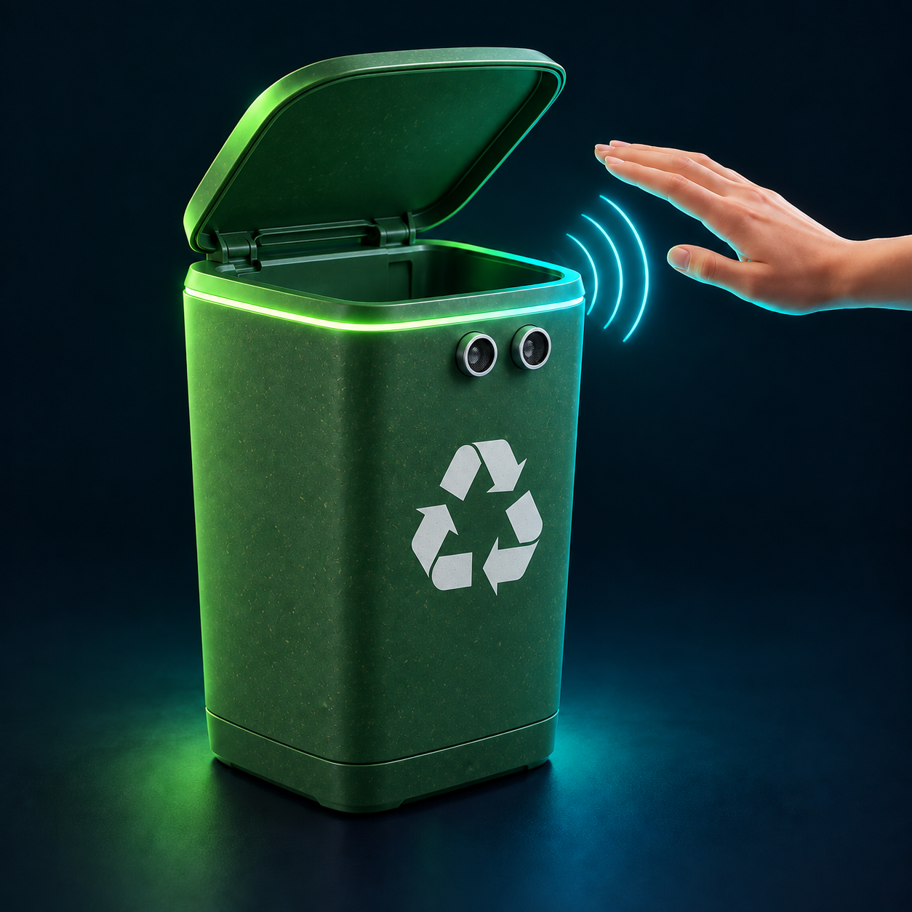

Arduino
El cerebro del proyecto. Recibe la señal del sensor y controla el movimiento de la tapa.
CONTROLAutomatización, tecnología y
cuidado del medio ambiente.
Acerca tu mano. La tecnología hace el resto.
Una idea sencilla, creada con Arduino, para mejorar lo cotidiano.

EL PROYECTO
¿Y si no hiciera falta tocar la tapa?
Nuestro basurero inteligente detecta cuando acercas la mano y abre la tapa automáticamente. Después de unos segundos, vuelve a cerrarse.
Lo construimos con Arduino, un sensor de distancia y un servomotor. Electrónica y programación trabajando juntas para resolver algo de todos los días.
Un movimiento de tu mano activa todo el proceso.
DEL GESTO AL MOVIMIENTO
Todo sucede en unos segundos.
Así trabajan juntos nuestros componentes.
Acercas la mano al sensor del basurero.
EL GESTOMide la distancia y reconoce la presencia.
LA DETECCIÓNProcesa la señal y activa el servomotor.
LA INSTRUCCIÓNEl servomotor levanta la tapa sin tocarla.
EL MOVIMIENTOTras unos segundos, la tapa baja de nuevo.
EL REINICIOPRUÉBALO AQUÍ
Reproduce la secuencia y sigue la señal desde el sensor hasta la tapa.
Demostración visual del funcionamiento.LO QUE HACE POSIBLE LA IDEA
Cada componente tiene su misión.
Juntos, le dan vida al proyecto.
El cerebro del proyecto. Recibe la señal del sensor y controla el movimiento de la tapa.
CONTROLLos ojos del sistema. Detecta cuándo una mano está cerca para iniciar la apertura.
DETECCIÓNTransforma la instrucción de Arduino en movimiento: levanta y baja la tapa.
MOVIMIENTOLa estructura del prototipo. Integra los componentes y mantiene la tapa en su lugar.
ESTRUCTURAConectan las piezas para que la energía y las señales lleguen donde se necesitan.
CONEXIÓNAporta la energía necesaria para hacer funcionar Arduino, el sensor y el servomotor.
ENERGÍATECNOLOGÍA CON PROPÓSITO
Aprendemos a conectar el mundo digital con el físico. Una señal, una decisión y una acción que podemos ver.
NUESTRO OBJETIVO
Crear una solución sencilla para abrir el basurero sin tocarlo y demostrar que la automatización puede ayudarnos a resolver problemas reales.
DE LA IDEA AL PROTOTIPO
Un espacio para nuestras fotos:
el armado, los detalles y el resultado.
Vista completa del basurero inteligente.
Arduino, sensor y conexiones del montaje.
La tapa responde a la presencia de una mano.
LAS PERSONAS DETRÁS
Explorar, construir, equivocarnos y volver
a intentar. Así aprendemos juntos.
LO QUE NOS LLEVAMOS
Conectamos electrónica, programación y trabajo en equipo. Descubrimos cómo un sensor y unas instrucciones pueden transformar una idea en algo que funciona.
Este proyecto nos recuerda que aprender tecnología también es imaginar cómo mejorar nuestro entorno.
Volver al inicio ↑